Beginning with Cinema 4D R16 you can move your plugin projects to different folders. Since the directory structure in the plugins folder was changed with R16 as well, many developers wanted to change this back to the old style. But this was easier said than done. Here's the cure, just read on and you'll move your project directories anywhere you want.
Prior to ripping apart your project folders, you should pay attention to some basic prerequisites:
cinema4dsdkCINEMA 4D executable is locatedMenu: Product → Cleanup or the shortcut Cmd + Shift + K to do so.In a first step, I'll show you how to move the project folder within Cinema 4D's plugins folder. Let's assume, we have the structure like it was, when Cinema 4D R16 was first released. The plan is to move the cinema4dsdk folder like shown in the screenshot below.
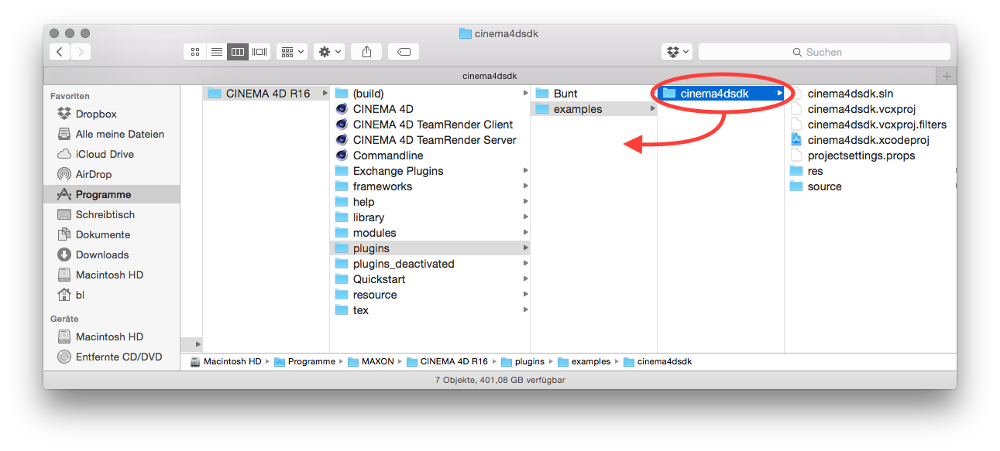
Who would have thought this? We begin with actually moving the folder to its destination location (like in the above screenshot).
Open the cinema4dsdk.xcodeproj from its new location. The result will probably look like this:
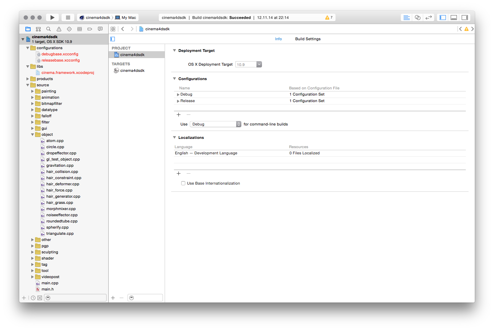
See the base configurations in the configurations folder highlighted in red? These were referenced relatively and thus Xcode can't find them anymore. In order to correct this, we'll delete and re-add them. In theory it would possible to enter the properties of the base configurations and change their paths there. Unfortunately this will complicate the subsequent steps. So I recommend to follow along and delete the base configurations like shown here:
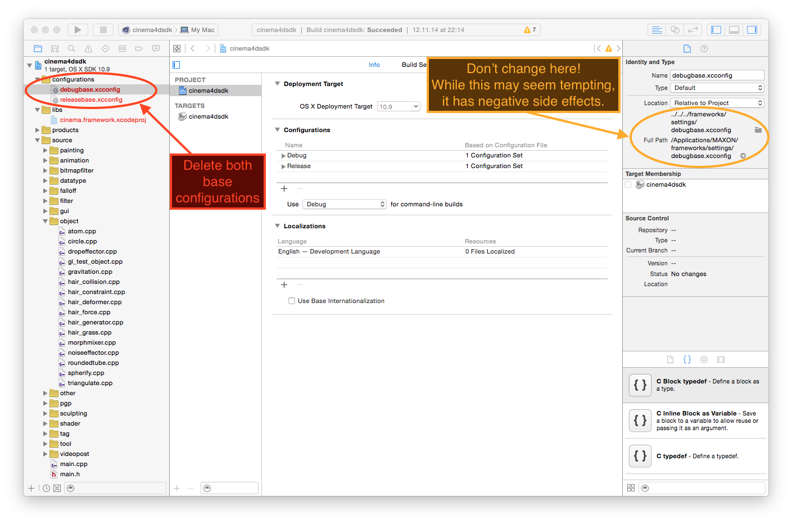
You may be asked to unlock. If so, accept this.
Then right click (or Ctrl-click) the configurations folder and choose Add files to "cinema4dsdk"..., navigate to the folder frameworks/settings to add both base configurations (debugbase.xcconfig and releasebase.xcconfig) again, like so:
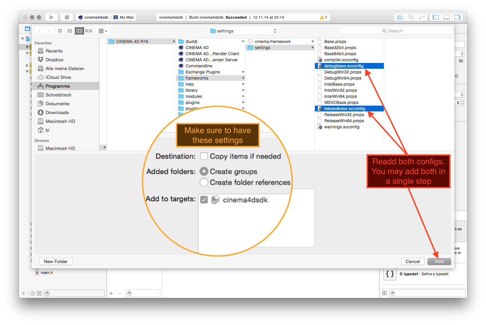
Make sure to have the settings exactly like shown in the screenshot above!
Due to deleting the base configurations, they are no longer referenced in the cinema4dsdk project. It looks like this:
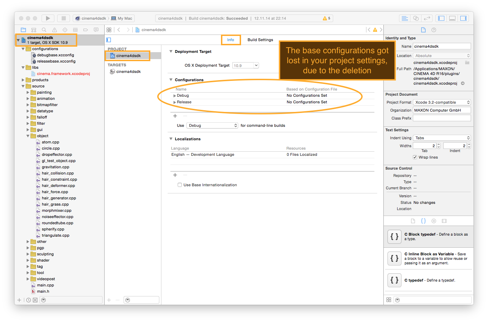
Go to the projects info page, unfold Configurations and unfold the Debug and Release configuration. There you will add the respective base configurations to the line with the blue icon. Just like it's shown in the following screenshot:
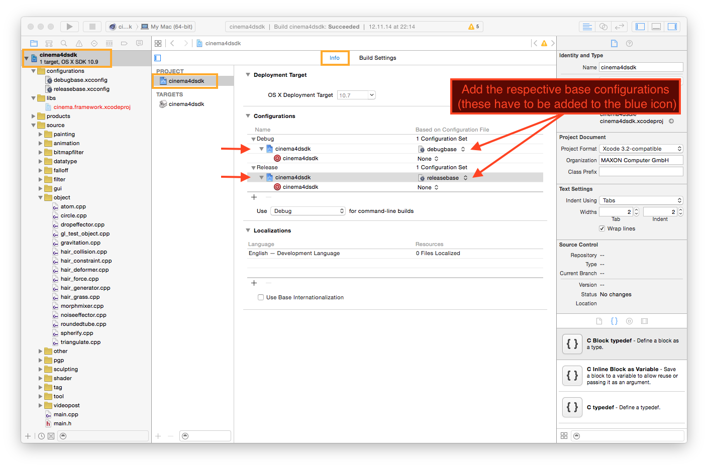
There's still something red inside your project. Similar to the base configurations cinema.framework's static library was referenced relatively as well and can't be found anymore.
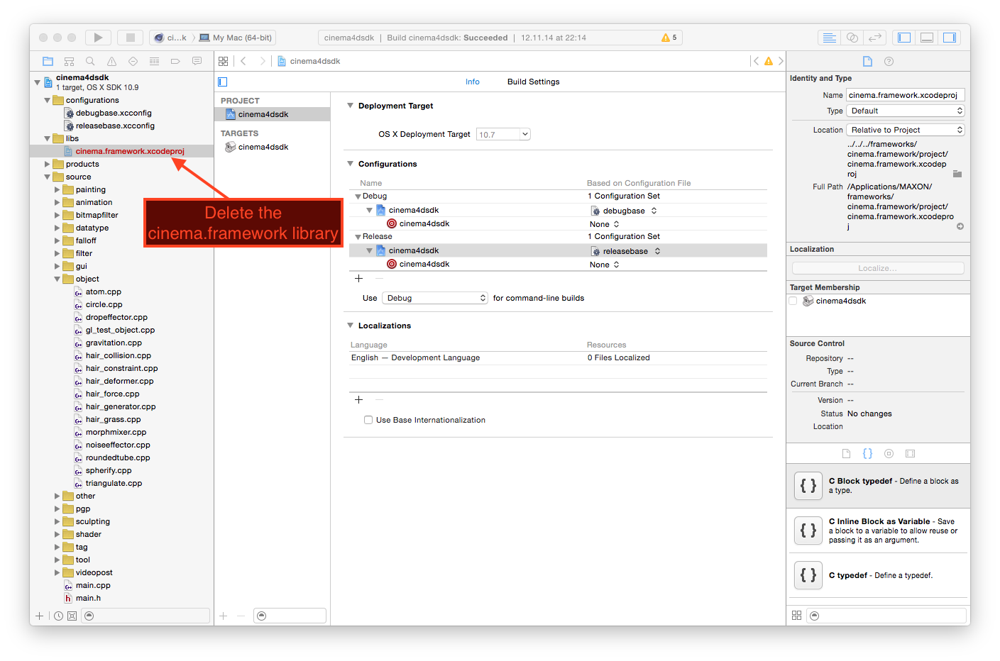
Like you did in Step 3 for the base configurations go ahead and delete the red cinema.framework.xcodeproj from the libs folder and then right click (or Ctrl-click) the libs folder and choose Add files to "cinema4dsdk"..., navigate to the folder frameworks/cinema.framework/project to add the project cinema.framework.xcodeproj again. While doing so pay attention to have the settings exactly like shown in the screenshot (they are the same as in Step 3):
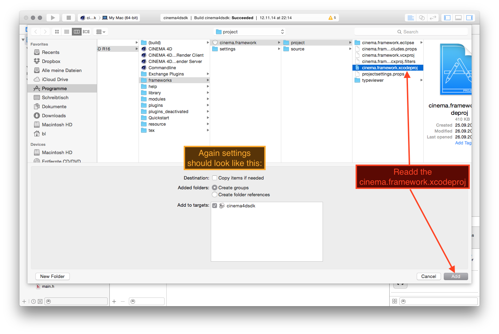
Now, Xcode will probably start indexing. Depending on your Xcode version, you may have to select the cinema.framework.xcodeproj to get the indexing started. Let Xcode do its job, this may be enough time to have a sip of coffee.
Now it's time to let your project know, it got moved. Have the cinema4dsdk project selected in the tree on the left, then select the project cinema4dsdk (and not the target), go to Build Settings and select All and Combined. There in section User-Defined you want to change the define of MAXON_ROOTDIR from ../../.. to ../../. Note that you can use the search function on the top right in order to quickly jump to the setting you want to change. The final outcome should look like this:
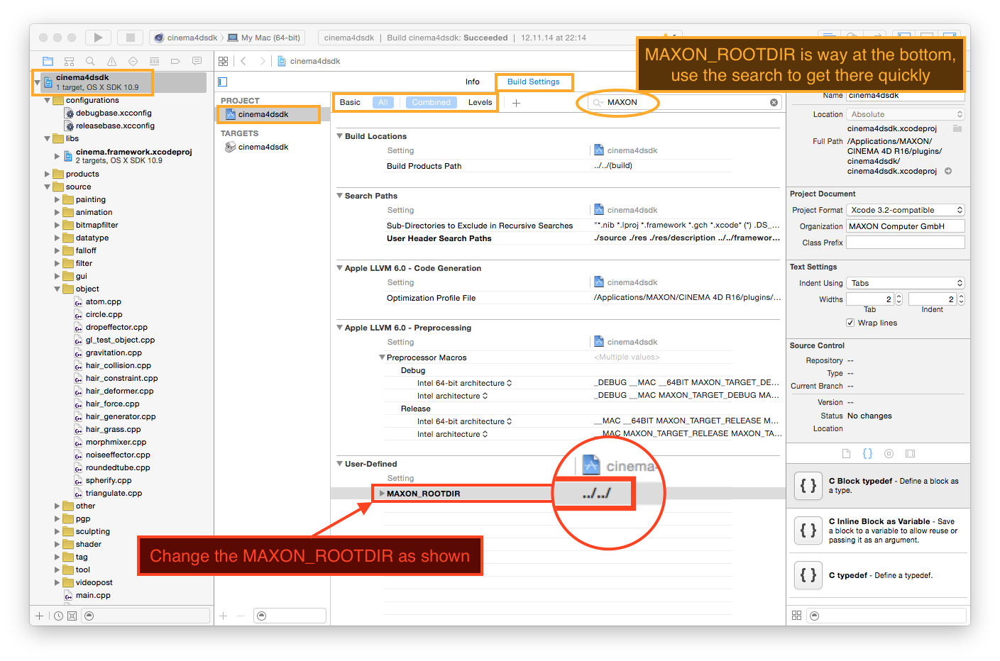
We are almost there. The linker lost the information to link your plugin against the cinema.framework static library. Your cinema4dsdk project should still be selected in the tree on the left. Now select the target cinema.framework and change to the Build Phases tab. Link Binary with Libraries should say "(0 items)". This is not correct. Unfold this section and use the "+" button to add the static library libcinema.framework.a. Like so:
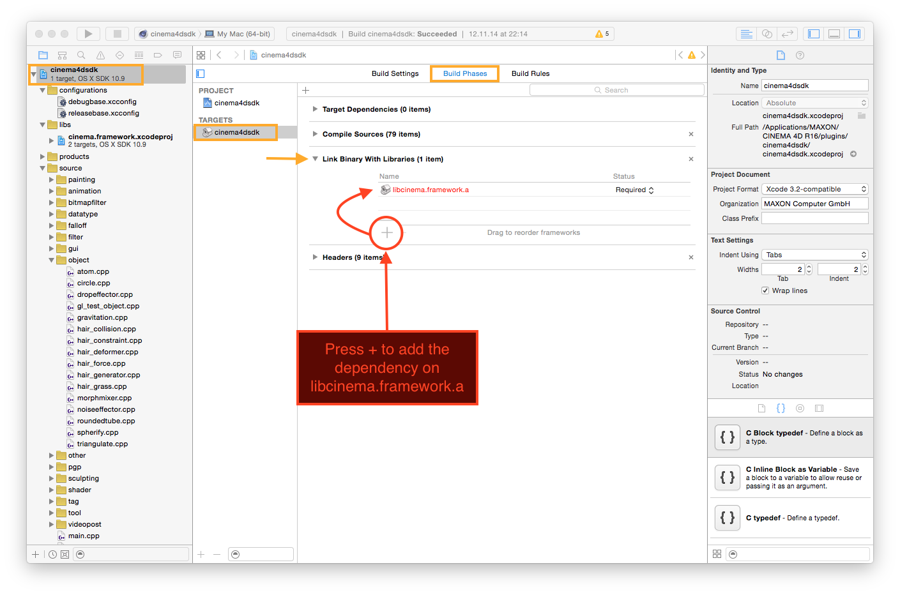
While you went through the above procedure at least with Xcode 6.0.1 there are several build directories generated. Some of these prevent you from successfully building your project, now. Look at the two following screenshots and check for the marked directories. As with all delete operations, please be careful! If you accidentally stored the only existing photo of your newborn child in one of these folders, I don't want to be responsible for its deletion.
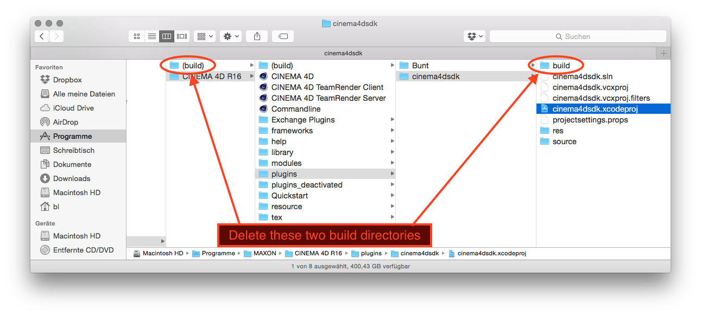
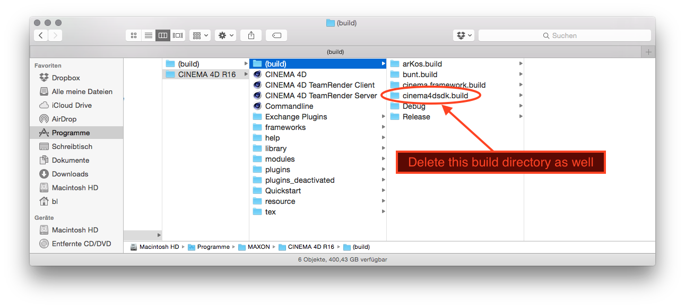
Congratulations! Now you are done. Click the Build button and if I have done my job right your project will build successfully in the new location.
{kind=link}
{kind=link}
{kind=link}
{kind=link}
{kind=link}
{kind=link}
{kind=link}
{kind=link}
{kind=link}
{kind=link}
{kind=link}
{kind=link}